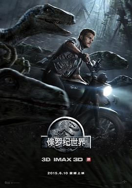

侏罗纪世界 / Jurassic World
又名：侏罗纪公园4 / Jurassic Park IV / Jurassic Park 4
作品信息
| 导演 | 科林·特莱沃若 |
| 编剧 | 里克·杰法 / 阿曼达·斯尔沃 / 德里克·康纳利 / 科林·特莱沃若 / 迈克尔·克莱顿 |
| 主演 | 克里斯·帕拉特 / 布莱丝·达拉斯·霍华德 / 文森特·多诺费奥 / 泰·辛普金斯 / 尼克·罗宾森 / 奥玛·希 / 黄荣亮 / 伊尔凡·可汗 / 朱迪·格雷尔 / 杰克·约翰逊 / 劳伦·拉普库斯 / 凯蒂·麦克格雷斯 / 布莱恩·泰 / 埃迪·J.费尔南德斯 / 因德尔·库马尔 / 安迪·巴克利 / 吉米·法伦 |
| 类型 | 动作 / 科幻 / 冒险 |
| 制片国家/地区 | 美国 |
| 语言 | 英语 |
| 上映日期 | 2015-06-10(中国大陆) / 2015-06-12(美国) |
| 片长 | 124分钟 |
| IMDb | tt0369610 |
最后一次看到是 2026-08-12T21:12:30+08:00 · 豆瓣原页